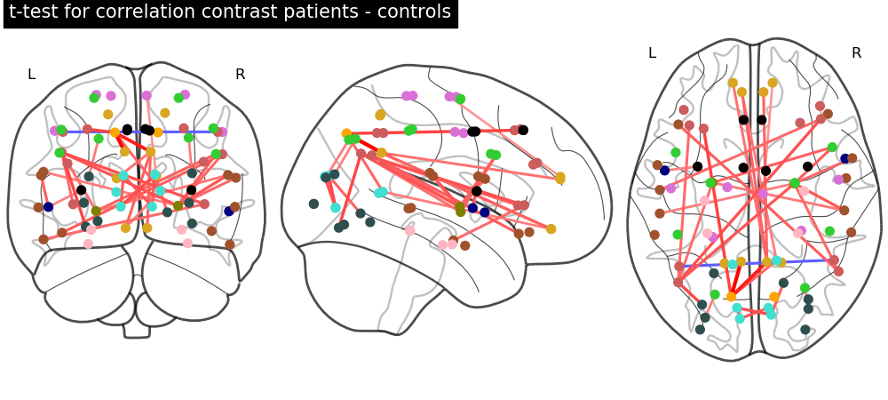
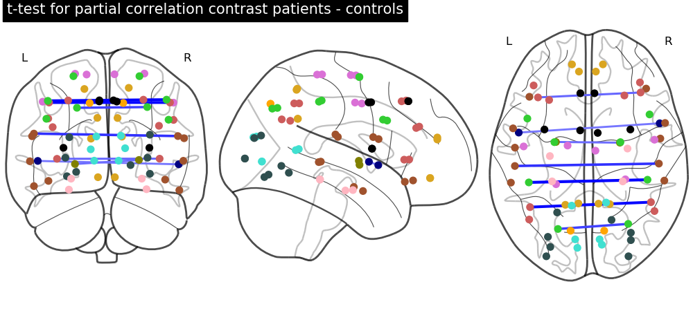
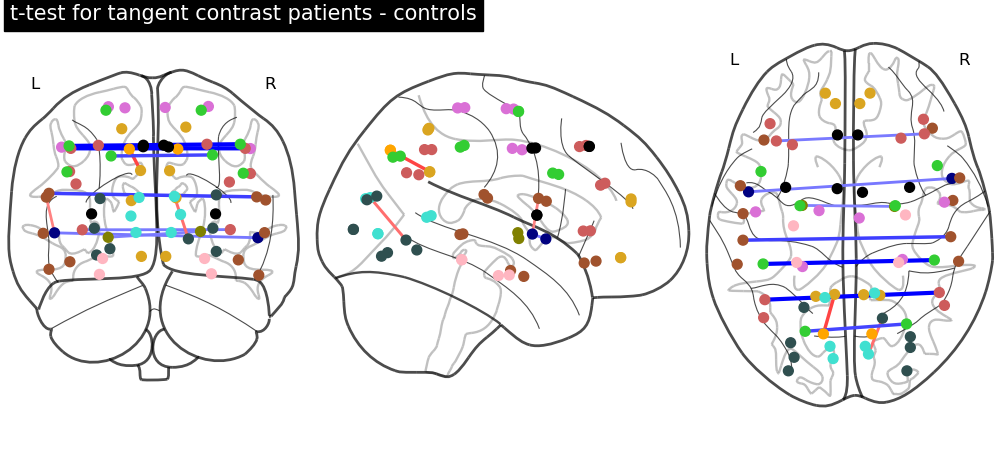
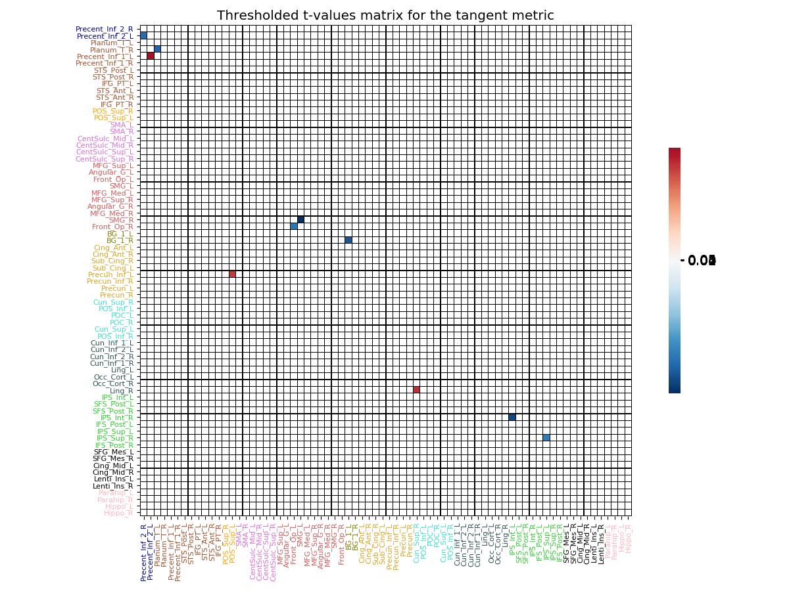

Note
Click here to download the full example code
Two samples t-test¶
What you’ll learn: Compute a two-samples t-test between two groups of connectivity matrices, and plot the results on a glass brain.
Author: Dhaif BEKHA
Retrieve the example dataset¶
In this example, we will work directly on a pre-computed dictionary, that contain two set of connectivity matrices, from two different groups. The first group, called controls is a set of connectivity matrices from healthy seven years old children, and the second group called patients, is a set of connectivity matrices from seven years old children who have suffered a stroke. You can download the dictionary use in this example here.
Module import¶
from conpagnon.utils.folders_and_files_management import load_object, save_object
from conpagnon.connectivity_statistics.parametric_tests import two_samples_t_test
from conpagnon.plotting.display import plot_ttest_results, plot_matrix
from conpagnon.data_handling import atlas
from pathlib import Path
import os
import matplotlib.pyplot as plt
Load data, and set Path¶
We first load the dictionary containing the connectivity matrices for each group of subjects. We will work as usual in your home directory. We will also explore what’s in this dictionary, such as the different group, the number of subject …
# Fetch the path of the home directory
home_directory = str(Path.home())
# Load the dictionary containing the connectivity matrices
subjects_connectivity_matrices = load_object(
full_path_to_object=os.path.join(home_directory, 'raw_subjects_connectivity_matrices.pkl'))
# Fetch the group name
groups = list(subjects_connectivity_matrices.keys())
print(groups)
# Number of subjects in the control, and
# patients group
print('There is {} subjects in the {} group, and {} in the {} group'.format(
len(subjects_connectivity_matrices[groups[0]]), groups[0],
len(subjects_connectivity_matrices[groups[1]]), groups[1]))
# Print the list of connectivity metric available,
# taking the first subject, in the first group for
# example:
print('List of computed connectivity metric: {}'.format(subjects_connectivity_matrices['controls']))
Out:
['patients', 'controls']
There is 27 subjects in the patients group, and 26 in the controls group
List of computed connectivity metric: {'sub26_ep120255': {'tangent': array([[ 0.34668365, -0.02596097, 0.10202664, ..., -0.00571668,
0.02283518, 0.05041936],
[-0.02596097, 0.1893169 , 0.23919751, ..., 0.00201595,
0.08088794, 0.08341837],
[ 0.10202664, 0.23919751, 0.2399401 , ..., -0.06823406,
-0.03235676, -0.03740442],
...,
[-0.00571668, 0.00201595, -0.06823406, ..., 0.14245189,
-0.0296552 , 0.11105097],
[ 0.02283518, 0.08088794, -0.03235676, ..., -0.0296552 ,
0.26355293, 0.05876384],
[ 0.05041936, 0.08341837, -0.03740442, ..., 0.11105097,
0.05876384, 0.1091364 ]]), 'partial correlation': array([[ 1.00000000e+00, 2.69534712e-01, 2.15338509e-02, ...,
-2.23231024e-03, 2.20460642e-02, 4.09937750e-02],
[ 2.69534712e-01, 1.00000000e+00, 2.42177312e-01, ...,
-1.61798756e-02, 7.94957185e-02, 1.36873023e-02],
[ 2.15338509e-02, 2.42177312e-01, 1.00000000e+00, ...,
-1.19220294e-02, -2.74346891e-02, 9.99106109e-04],
...,
[-2.23231024e-03, -1.61798756e-02, -1.19220294e-02, ...,
1.00000000e+00, -1.05740126e-02, 2.26960734e-01],
[ 2.20460642e-02, 7.94957185e-02, -2.74346891e-02, ...,
-1.05740126e-02, 1.00000000e+00, 4.58583769e-01],
[ 4.09937750e-02, 1.36873023e-02, 9.99106109e-04, ...,
2.26960734e-01, 4.58583769e-01, 1.00000000e+00]]), 'correlation': array([[ 1. , 0.644317 , 0.497006 , ..., 0.14583352,
0.19034922, 0.27231911],
[ 0.644317 , 1. , 0.57438289, ..., 0.05185723,
0.22563702, 0.26289014],
[ 0.497006 , 0.57438289, 1. , ..., -0.01419242,
0.12354794, 0.11658875],
...,
[ 0.14583352, 0.05185723, -0.01419242, ..., 1. ,
0.31503264, 0.41102986],
[ 0.19034922, 0.22563702, 0.12354794, ..., 0.31503264,
1. , 0.71284346],
[ 0.27231911, 0.26289014, 0.11658875, ..., 0.41102986,
0.71284346, 1. ]]), 'masked_array': array([[False, False, False, ..., False, False, False],
[False, False, False, ..., False, False, False],
[False, False, False, ..., False, False, False],
...,
[False, False, False, ..., False, False, False],
[False, False, False, ..., False, False, False],
[False, False, False, ..., False, False, False]]), 'diagonal_mask': array([False, False, False, False, False, False, False, False, False,
False, False, False, False, False, False, False, False, False,
False, False, False, False, False, False, False, False, False,
False, False, False, False, False, False, False, False, False,
False, False, False, False, False, False, False, False, False,
False, False, False, False, False, False, False, False, False,
False, False, False, False, False, False, False, False, False,
False, False, False, False, False, False, False, False, False]), 'discarded_rois': array([], dtype=int64)}, 'sub03_ct110201': {'tangent': array([[-0.04847596, 0.04405287, 0.15267369, ..., 0.02860048,
-0.05409059, 0.00316119],
[ 0.04405287, -0.00313571, 0.07042398, ..., -0.19486613,
0.04727369, 0.00466144],
[ 0.15267369, 0.07042398, 0.00650486, ..., 0.02297017,
0.01110401, 0.03146763],
...,
[ 0.02860048, -0.19486613, 0.02297017, ..., -0.00208375,
-0.07450053, 0.01484755],
[-0.05409059, 0.04727369, 0.01110401, ..., -0.07450053,
-0.1223657 , 0.28378309],
[ 0.00316119, 0.00466144, 0.03146763, ..., 0.01484755,
0.28378309, 0.08394103]]), 'partial correlation': array([[ 1. , 0.29102304, 0.0757014 , ..., 0.1376373 ,
-0.01084388, 0.03371507],
[ 0.29102304, 1. , 0.15240714, ..., -0.13473378,
0.0205852 , 0.03109506],
[ 0.0757014 , 0.15240714, 1. , ..., 0.057215 ,
-0.0077964 , 0.05259708],
...,
[ 0.1376373 , -0.13473378, 0.057215 , ..., 1. ,
-0.01543561, 0.17327146],
[-0.01084388, 0.0205852 , -0.0077964 , ..., -0.01543561,
1. , 0.58880519],
[ 0.03371507, 0.03109506, 0.05259708, ..., 0.17327146,
0.58880519, 1. ]]), 'correlation': array([[ 1. , 0.76563687, 0.5261289 , ..., 0.02020282,
0.15908568, 0.21627445],
[ 0.76563687, 1. , 0.50090221, ..., -0.04625966,
0.23546683, 0.23322333],
[ 0.5261289 , 0.50090221, 1. , ..., -0.00525775,
0.14482639, 0.14523803],
...,
[ 0.02020282, -0.04625966, -0.00525775, ..., 1. ,
0.33081684, 0.35972548],
[ 0.15908568, 0.23546683, 0.14482639, ..., 0.33081684,
1. , 0.80437823],
[ 0.21627445, 0.23322333, 0.14523803, ..., 0.35972548,
0.80437823, 1. ]]), 'masked_array': array([[False, False, False, ..., False, False, False],
[False, False, False, ..., False, False, False],
[False, False, False, ..., False, False, False],
...,
[False, False, False, ..., False, False, False],
[False, False, False, ..., False, False, False],
[False, False, False, ..., False, False, False]]), 'diagonal_mask': array([False, False, False, False, False, False, False, False, False,
False, False, False, False, False, False, False, False, False,
False, False, False, False, False, False, False, False, False,
False, False, False, False, False, False, False, False, False,
False, False, False, False, False, False, False, False, False,
False, False, False, False, False, False, False, False, False,
False, False, False, False, False, False, False, False, False,
False, False, False, False, False, False, False, False, False]), 'discarded_rois': array([], dtype=int64)}, 'sub05_gk110258': {'tangent': array([[ 0.28835151, -0.03314118, -0.14580623, ..., -0.11966285,
0.04679945, 0.22542129],
[-0.03314118, 0.24540853, -0.00447735, ..., 0.01034261,
0.15547845, 0.10364595],
[-0.14580623, -0.00447735, 0.22939535, ..., -0.0093618 ,
0.10302582, -0.04220894],
...,
[-0.11966285, 0.01034261, -0.0093618 , ..., -0.09775347,
0.06552239, -0.06437418],
[ 0.04679945, 0.15547845, 0.10302582, ..., 0.06552239,
-0.07594847, 0.15096475],
[ 0.22542129, 0.10364595, -0.04220894, ..., -0.06437418,
0.15096475, 0.04064643]]), 'partial correlation': array([[ 1.00000000e+00, 3.55787875e-01, -6.67058145e-02, ...,
-8.89113858e-02, -2.42397119e-02, 1.85659823e-01],
[ 3.55787875e-01, 1.00000000e+00, 1.06763751e-01, ...,
8.43025572e-04, 1.17525418e-01, 4.18649513e-02],
[-6.67058145e-02, 1.06763751e-01, 1.00000000e+00, ...,
-3.90885659e-03, 1.39686924e-01, -5.96811804e-02],
...,
[-8.89113858e-02, 8.43025572e-04, -3.90885659e-03, ...,
1.00000000e+00, 1.31452368e-01, 1.09619502e-01],
[-2.42397119e-02, 1.17525418e-01, 1.39686924e-01, ...,
1.31452368e-01, 1.00000000e+00, 4.98823086e-01],
[ 1.85659823e-01, 4.18649513e-02, -5.96811804e-02, ...,
1.09619502e-01, 4.98823086e-01, 1.00000000e+00]]), 'correlation': array([[1. , 0.5726662 , 0.19832914, ..., 0.15445093, 0.29216136,
0.40412142],
[0.5726662 , 1. , 0.41062341, ..., 0.15124298, 0.38363816,
0.39752703],
[0.19832914, 0.41062341, 1. , ..., 0.11302583, 0.25624968,
0.25223449],
...,
[0.15445093, 0.15124298, 0.11302583, ..., 1. , 0.26897488,
0.27137923],
[0.29216136, 0.38363816, 0.25624968, ..., 0.26897488, 1. ,
0.76605968],
[0.40412142, 0.39752703, 0.25223449, ..., 0.27137923, 0.76605968,
1. ]]), 'masked_array': array([[False, False, False, ..., False, False, False],
[False, False, False, ..., False, False, False],
[False, False, False, ..., False, False, False],
...,
[False, False, False, ..., False, False, False],
[False, False, False, ..., False, False, False],
[False, False, False, ..., False, False, False]]), 'diagonal_mask': array([False, False, False, False, False, False, False, False, False,
False, False, False, False, False, False, False, False, False,
False, False, False, False, False, False, False, False, False,
False, False, False, False, False, False, False, False, False,
False, False, False, False, False, False, False, False, False,
False, False, False, False, False, False, False, False, False,
False, False, False, False, False, False, False, False, False,
False, False, False, False, False, False, False, False, False]), 'discarded_rois': array([], dtype=int64)}, 'sub06_al110271': {'tangent': array([[ 0.11771855, -0.02644897, 0.02185634, ..., 0.05200607,
0.01570613, -0.0106154 ],
[-0.02644897, 0.1015124 , -0.04790557, ..., 0.06078423,
0.07774854, 0.00055205],
[ 0.02185634, -0.04790557, -0.20187799, ..., -0.00246 ,
0.03434598, -0.16234731],
...,
[ 0.05200607, 0.06078423, -0.00246 , ..., 0.0806777 ,
-0.05656382, -0.08934022],
[ 0.01570613, 0.07774854, 0.03434598, ..., -0.05656382,
0.23573984, -0.18177426],
[-0.0106154 , 0.00055205, -0.16234731, ..., -0.08934022,
-0.18177426, 0.10974714]]), 'partial correlation': array([[ 1. , 0.23367918, -0.00589744, ..., 0.05170791,
0.00632245, 0.08991453],
[ 0.23367918, 1. , 0.09711176, ..., -0.01119037,
0.06363155, 0.04032184],
[-0.00589744, 0.09711176, 1. , ..., 0.04231657,
0.08125696, -0.03955116],
...,
[ 0.05170791, -0.01119037, 0.04231657, ..., 1. ,
-0.01136613, 0.11948596],
[ 0.00632245, 0.06363155, 0.08125696, ..., -0.01136613,
1. , 0.35575405],
[ 0.08991453, 0.04032184, -0.03955116, ..., 0.11948596,
0.35575405, 1. ]]), 'correlation': array([[ 1. , 0.69317446, 0.42395081, ..., 0.04549617,
0.06647264, 0.00152542],
[ 0.69317446, 1. , 0.34311206, ..., 0.03212478,
0.12849047, 0.03028872],
[ 0.42395081, 0.34311206, 1. , ..., -0.15419022,
-0.08815021, -0.27272206],
...,
[ 0.04549617, 0.03212478, -0.15419022, ..., 1. ,
0.39309009, 0.37417958],
[ 0.06647264, 0.12849047, -0.08815021, ..., 0.39309009,
1. , 0.60775992],
[ 0.00152542, 0.03028872, -0.27272206, ..., 0.37417958,
0.60775992, 1. ]]), 'masked_array': array([[False, False, False, ..., False, False, False],
[False, False, False, ..., False, False, False],
[False, False, False, ..., False, False, False],
...,
[False, False, False, ..., False, False, False],
[False, False, False, ..., False, False, False],
[False, False, False, ..., False, False, False]]), 'diagonal_mask': array([False, False, False, False, False, False, False, False, False,
False, False, False, False, False, False, False, False, False,
False, False, False, False, False, False, False, False, False,
False, False, False, False, False, False, False, False, False,
False, False, False, False, False, False, False, False, False,
False, False, False, False, False, False, False, False, False,
False, False, False, False, False, False, False, False, False,
False, False, False, False, False, False, False, False, False]), 'discarded_rois': array([], dtype=int64)}, 'sub08_cd090095': {'tangent': array([[ 0.21050956, 0.2741866 , -0.10865462, ..., -0.17599942,
0.01284614, -0.14524542],
[ 0.2741866 , 0.16082398, -0.24925339, ..., -0.13329458,
0.05074256, -0.08938476],
[-0.10865462, -0.24925339, 0.17505194, ..., -0.15171041,
-0.02305235, 0.02943049],
...,
[-0.17599942, -0.13329458, -0.15171041, ..., -0.0259012 ,
-0.09373358, -0.0497942 ],
[ 0.01284614, 0.05074256, -0.02305235, ..., -0.09373358,
0.22878143, 0.05579084],
[-0.14524542, -0.08938476, 0.02943049, ..., -0.0497942 ,
0.05579084, 0.2646013 ]]), 'partial correlation': array([[ 1. , 0.44463802, -0.00186869, ..., -0.04070992,
0.01405006, -0.03294564],
[ 0.44463802, 1. , -0.06071204, ..., -0.13425082,
0.14733013, 0.07208176],
[-0.00186869, -0.06071204, 1. , ..., -0.13318604,
-0.02720916, 0.08503354],
...,
[-0.04070992, -0.13425082, -0.13318604, ..., 1. ,
0.00634377, 0.16626266],
[ 0.01405006, 0.14733013, -0.02720916, ..., 0.00634377,
1. , 0.4358864 ],
[-0.03294564, 0.07208176, 0.08503354, ..., 0.16626266,
0.4358864 , 1. ]]), 'correlation': array([[ 1. , 0.77244406, 0.14483342, ..., 0.02719286,
-0.01788034, -0.08763996],
[ 0.77244406, 1. , 0.14211868, ..., 0.04761511,
-0.05519284, -0.13335672],
[ 0.14483342, 0.14211868, 1. , ..., 0.08140129,
0.07363684, 0.07177247],
...,
[ 0.02719286, 0.04761511, 0.08140129, ..., 1. ,
0.14516444, 0.17952636],
[-0.01788034, -0.05519284, 0.07363684, ..., 0.14516444,
1. , 0.6919179 ],
[-0.08763996, -0.13335672, 0.07177247, ..., 0.17952636,
0.6919179 , 1. ]]), 'masked_array': array([[False, False, False, ..., False, False, False],
[False, False, False, ..., False, False, False],
[False, False, False, ..., False, False, False],
...,
[False, False, False, ..., False, False, False],
[False, False, False, ..., False, False, False],
[False, False, False, ..., False, False, False]]), 'diagonal_mask': array([False, False, False, False, False, False, False, False, False,
False, False, False, False, False, False, False, False, False,
False, False, False, False, False, False, False, False, False,
False, False, False, False, False, False, False, False, False,
False, False, False, False, False, False, False, False, False,
False, False, False, False, False, False, False, False, False,
False, False, False, False, False, False, False, False, False,
False, False, False, False, False, False, False, False, False]), 'discarded_rois': array([], dtype=int64)}, 'sub12_at110408': {'tangent': array([[ 0.15124313, -0.10426101, 0.0722845 , ..., 0.08516585,
0.1310038 , 0.02231487],
[-0.10426101, 0.22813484, -0.02502771, ..., -0.10900143,
-0.01971145, -0.04266982],
[ 0.0722845 , -0.02502771, 0.06898337, ..., -0.08076604,
-0.02199277, 0.05050397],
...,
[ 0.08516585, -0.10900143, -0.08076604, ..., 0.03145577,
0.10617301, -0.03352799],
[ 0.1310038 , -0.01971145, -0.02199277, ..., 0.10617301,
-0.07049964, -0.07817003],
[ 0.02231487, -0.04266982, 0.05050397, ..., -0.03352799,
-0.07817003, -0.06123817]]), 'partial correlation': array([[ 1. , 0.26271676, 0.05299251, ..., 0.05985893,
0.04605138, 0.02147632],
[ 0.26271676, 1. , 0.06475783, ..., -0.14493435,
-0.01947346, 0.02561643],
[ 0.05299251, 0.06475783, 1. , ..., -0.02267142,
-0.0148793 , 0.09416106],
...,
[ 0.05985893, -0.14493435, -0.02267142, ..., 1. ,
0.05726854, 0.09159041],
[ 0.04605138, -0.01947346, -0.0148793 , ..., 0.05726854,
1. , 0.37611655],
[ 0.02147632, 0.02561643, 0.09416106, ..., 0.09159041,
0.37611655, 1. ]]), 'correlation': array([[ 1. , 0.60567696, 0.36706993, ..., 0.2828019 ,
0.33129139, 0.30286586],
[ 0.60567696, 1. , 0.38733391, ..., 0.09531163,
0.15849783, 0.1224599 ],
[ 0.36706993, 0.38733391, 1. , ..., -0.05952294,
0.0270244 , 0.06055375],
...,
[ 0.2828019 , 0.09531163, -0.05952294, ..., 1. ,
0.57136109, 0.49677135],
[ 0.33129139, 0.15849783, 0.0270244 , ..., 0.57136109,
1. , 0.70273242],
[ 0.30286586, 0.1224599 , 0.06055375, ..., 0.49677135,
0.70273242, 1. ]]), 'masked_array': array([[False, False, False, ..., False, False, False],
[False, False, False, ..., False, False, False],
[False, False, False, ..., False, False, False],
...,
[False, False, False, ..., False, False, False],
[False, False, False, ..., False, False, False],
[False, False, False, ..., False, False, False]]), 'diagonal_mask': array([False, False, False, False, False, False, False, False, False,
False, False, False, False, False, False, False, False, False,
False, False, False, False, False, False, False, False, False,
False, False, False, False, False, False, False, False, False,
False, False, False, False, False, False, False, False, False,
False, False, False, False, False, False, False, False, False,
False, False, False, False, False, False, False, False, False,
False, False, False, False, False, False, False, False, False]), 'discarded_rois': array([], dtype=int64)}, 'sub16_cg120322': {'tangent': array([[ 0.1312456 , -0.04103534, 0.00367157, ..., 0.15195643,
0.12483304, 0.03460375],
[-0.04103534, 0.06510854, -0.01847235, ..., 0.01601618,
0.10476188, 0.02019609],
[ 0.00367157, -0.01847235, 0.21563854, ..., -0.07879023,
0.03448911, 0.12003231],
...,
[ 0.15195643, 0.01601618, -0.07879023, ..., 0.16018668,
-0.06864503, 0.07067327],
[ 0.12483304, 0.10476188, 0.03448911, ..., -0.06864503,
0.27713081, -0.02831399],
[ 0.03460375, 0.02019609, 0.12003231, ..., 0.07067327,
-0.02831399, 0.17809229]]), 'partial correlation': array([[ 1. , 0.22061722, 0.04490603, ..., 0.17666463,
0.12639543, 0.0258887 ],
[ 0.22061722, 1. , 0.04548079, ..., -0.06512682,
0.06409066, 0.01460272],
[ 0.04490603, 0.04548079, 1. , ..., -0.08723817,
0.02475741, 0.12135035],
...,
[ 0.17666463, -0.06512682, -0.08723817, ..., 1. ,
-0.04783652, 0.20350105],
[ 0.12639543, 0.06409066, 0.02475741, ..., -0.04783652,
1. , 0.40919639],
[ 0.0258887 , 0.01460272, 0.12135035, ..., 0.20350105,
0.40919639, 1. ]]), 'correlation': array([[1. , 0.68063951, 0.31128429, ..., 0.28785145, 0.23059891,
0.24470516],
[0.68063951, 1. , 0.38957278, ..., 0.2412702 , 0.24925803,
0.23928891],
[0.31128429, 0.38957278, 1. , ..., 0.0237571 , 0.06920725,
0.16617911],
...,
[0.28785145, 0.2412702 , 0.0237571 , ..., 1. , 0.22794016,
0.31942533],
[0.23059891, 0.24925803, 0.06920725, ..., 0.22794016, 1. ,
0.62842683],
[0.24470516, 0.23928891, 0.16617911, ..., 0.31942533, 0.62842683,
1. ]]), 'masked_array': array([[False, False, False, ..., False, False, False],
[False, False, False, ..., False, False, False],
[False, False, False, ..., False, False, False],
...,
[False, False, False, ..., False, False, False],
[False, False, False, ..., False, False, False],
[False, False, False, ..., False, False, False]]), 'diagonal_mask': array([False, False, False, False, False, False, False, False, False,
False, False, False, False, False, False, False, False, False,
False, False, False, False, False, False, False, False, False,
False, False, False, False, False, False, False, False, False,
False, False, False, False, False, False, False, False, False,
False, False, False, False, False, False, False, False, False,
False, False, False, False, False, False, False, False, False,
False, False, False, False, False, False, False, False, False]), 'discarded_rois': array([], dtype=int64)}, 'sub17_cm120095': {'tangent': array([[ 0.33643062, -0.11154715, 0.12599458, ..., -0.03915763,
-0.18608142, -0.0121737 ],
[-0.11154715, 0.04695796, -0.10633684, ..., 0.08273834,
0.15538337, 0.10278844],
[ 0.12599458, -0.10633684, 0.07616821, ..., 0.02664557,
-0.01358977, 0.01772041],
...,
[-0.03915763, 0.08273834, 0.02664557, ..., -0.09731281,
0.15683669, 0.09145904],
[-0.18608142, 0.15538337, -0.01358977, ..., 0.15683669,
-0.19221142, 0.18662874],
[-0.0121737 , 0.10278844, 0.01772041, ..., 0.09145904,
0.18662874, -0.2977186 ]]), 'partial correlation': array([[ 1. , 0.28963766, 0.11377275, ..., 0.00459192,
-0.15686076, 0.09328927],
[ 0.28963766, 1. , 0.02598479, ..., -0.01621483,
0.09575133, 0.01391511],
[ 0.11377275, 0.02598479, 1. , ..., -0.01559722,
0.02224952, 0.01562783],
...,
[ 0.00459192, -0.01621483, -0.01559722, ..., 1. ,
0.13474802, 0.14242884],
[-0.15686076, 0.09575133, 0.02224952, ..., 0.13474802,
1. , 0.47615499],
[ 0.09328927, 0.01391511, 0.01562783, ..., 0.14242884,
0.47615499, 1. ]]), 'correlation': array([[1. , 0.54318061, 0.44091187, ..., 0.14380604, 0.02657926,
0.08241156],
[0.54318061, 1. , 0.25449928, ..., 0.31780799, 0.3185204 ,
0.31275157],
[0.44091187, 0.25449928, 1. , ..., 0.06565277, 0.01775319,
0.03581789],
...,
[0.14380604, 0.31780799, 0.06565277, ..., 1. , 0.53804742,
0.56485674],
[0.02657926, 0.3185204 , 0.01775319, ..., 0.53804742, 1. ,
0.84223471],
[0.08241156, 0.31275157, 0.03581789, ..., 0.56485674, 0.84223471,
1. ]]), 'masked_array': array([[False, False, False, ..., False, False, False],
[False, False, False, ..., False, False, False],
[False, False, False, ..., False, False, False],
...,
[False, False, False, ..., False, False, False],
[False, False, False, ..., False, False, False],
[False, False, False, ..., False, False, False]]), 'diagonal_mask': array([False, False, False, False, False, False, False, False, False,
False, False, False, False, False, False, False, False, False,
False, False, False, False, False, False, False, False, False,
False, False, False, False, False, False, False, False, False,
False, False, False, False, False, False, False, False, False,
False, False, False, False, False, False, False, False, False,
False, False, False, False, False, False, False, False, False,
False, False, False, False, False, False, False, False, False]), 'discarded_rois': array([], dtype=int64)}, 'sub21_sb120208': {'tangent': array([[-0.015468 , 0.0304578 , -0.01205412, ..., -0.06656357,
-0.09148309, -0.12934229],
[ 0.0304578 , -0.19115098, -0.19394022, ..., -0.01904011,
-0.05444648, -0.01355491],
[-0.01205412, -0.19394022, -0.01090985, ..., 0.06795757,
-0.02445266, -0.10997186],
...,
[-0.06656357, -0.01904011, 0.06795757, ..., 0.07414755,
0.05338848, 0.03481519],
[-0.09148309, -0.05444648, -0.02445266, ..., 0.05338848,
0.2990666 , 0.01175839],
[-0.12934229, -0.01355491, -0.10997186, ..., 0.03481519,
0.01175839, 0.31447385]]), 'partial correlation': array([[ 1. , 0.34969168, 0.03192313, ..., -0.03119745,
-0.05461828, 0.00651733],
[ 0.34969168, 1. , -0.04411664, ..., -0.00184123,
-0.04192247, 0.03287682],
[ 0.03192313, -0.04411664, 1. , ..., 0.02175747,
-0.00909187, -0.02866345],
...,
[-0.03119745, -0.00184123, 0.02175747, ..., 1. ,
0.089651 , 0.20659293],
[-0.05461828, -0.04192247, -0.00909187, ..., 0.089651 ,
1. , 0.41401897],
[ 0.00651733, 0.03287682, -0.02866345, ..., 0.20659293,
0.41401897, 1. ]]), 'correlation': array([[1. , 0.77553791, 0.46050326, ..., 0.0074088 , 0.16384073,
0.09066556],
[0.77553791, 1. , 0.40968175, ..., 0.01048081, 0.22163242,
0.1676797 ],
[0.46050326, 0.40968175, 1. , ..., 0.09188922, 0.12352934,
0.02448262],
...,
[0.0074088 , 0.01048081, 0.09188922, ..., 1. , 0.31826255,
0.34241079],
[0.16384073, 0.22163242, 0.12352934, ..., 0.31826255, 1. ,
0.67134257],
[0.09066556, 0.1676797 , 0.02448262, ..., 0.34241079, 0.67134257,
1. ]]), 'masked_array': array([[False, False, False, ..., False, False, False],
[False, False, False, ..., False, False, False],
[False, False, False, ..., False, False, False],
...,
[False, False, False, ..., False, False, False],
[False, False, False, ..., False, False, False],
[False, False, False, ..., False, False, False]]), 'diagonal_mask': array([False, False, False, False, False, False, False, False, False,
False, False, False, False, False, False, False, False, False,
False, False, False, False, False, False, False, False, False,
False, False, False, False, False, False, False, False, False,
False, False, False, False, False, False, False, False, False,
False, False, False, False, False, False, False, False, False,
False, False, False, False, False, False, False, False, False,
False, False, False, False, False, False, False, False, False]), 'discarded_rois': array([], dtype=int64)}, 'sub22_ln120402': {'tangent': array([[ 0.30792105, 0.03304284, 0.00683373, ..., -0.13776814,
-0.05112949, 0.0542202 ],
[ 0.03304284, 0.10658634, -0.0009778 , ..., -0.01869214,
0.04466788, 0.1010571 ],
[ 0.00683373, -0.0009778 , 0.29360028, ..., 0.08510354,
0.02805528, 0.04768336],
...,
[-0.13776814, -0.01869214, 0.08510354, ..., 0.21257652,
-0.10284614, 0.03561387],
[-0.05112949, 0.04466788, 0.02805528, ..., -0.10284614,
0.0556734 , -0.00275839],
[ 0.0542202 , 0.1010571 , 0.04768336, ..., 0.03561387,
-0.00275839, -0.12342499]]), 'partial correlation': array([[ 1. , 0.31892173, 0.02107575, ..., -0.06626748,
-0.03974239, 0.09620057],
[ 0.31892173, 1. , 0.06735146, ..., -0.0492355 ,
0.00790807, -0.00696089],
[ 0.02107575, 0.06735146, 1. , ..., 0.03339429,
0.03352796, 0.03676262],
...,
[-0.06626748, -0.0492355 , 0.03339429, ..., 1. ,
0.01244133, 0.15060969],
[-0.03974239, 0.00790807, 0.03352796, ..., 0.01244133,
1. , 0.37664468],
[ 0.09620057, -0.00696089, 0.03676262, ..., 0.15060969,
0.37664468, 1. ]]), 'correlation': array([[1. , 0.69691051, 0.33688171, ..., 0.10087137, 0.20722692,
0.31729822],
[0.69691051, 1. , 0.3824272 , ..., 0.1663211 , 0.31762823,
0.41028765],
[0.33688171, 0.3824272 , 1. , ..., 0.22865555, 0.1330538 ,
0.18458022],
...,
[0.10087137, 0.1663211 , 0.22865555, ..., 1. , 0.25179051,
0.39038759],
[0.20722692, 0.31762823, 0.1330538 , ..., 0.25179051, 1. ,
0.75086533],
[0.31729822, 0.41028765, 0.18458022, ..., 0.39038759, 0.75086533,
1. ]]), 'masked_array': array([[False, False, False, ..., False, False, False],
[False, False, False, ..., False, False, False],
[False, False, False, ..., False, False, False],
...,
[False, False, False, ..., False, False, False],
[False, False, False, ..., False, False, False],
[False, False, False, ..., False, False, False]]), 'diagonal_mask': array([False, False, False, False, False, False, False, False, False,
False, False, False, False, False, False, False, False, False,
False, False, False, False, False, False, False, False, False,
False, False, False, False, False, False, False, False, False,
False, False, False, False, False, False, False, False, False,
False, False, False, False, False, False, False, False, False,
False, False, False, False, False, False, False, False, False,
False, False, False, False, False, False, False, False, False]), 'discarded_rois': array([], dtype=int64)}, 'sub25_sv120315': {'tangent': array([[ 0.0482092 , 0.1158218 , 0.03906026, ..., -0.03953879,
0.03873475, -0.08382103],
[ 0.1158218 , 0.25173837, 0.10471424, ..., -0.01045458,
0.01596834, 0.01754335],
[ 0.03906026, 0.10471424, -0.08563452, ..., -0.2136654 ,
0.08866172, 0.03899847],
...,
[-0.03953879, -0.01045458, -0.2136654 , ..., -0.13321128,
0.23817226, 0.16659028],
[ 0.03873475, 0.01596834, 0.08866172, ..., 0.23817226,
0.26592828, -0.02952862],
[-0.08382103, 0.01754335, 0.03899847, ..., 0.16659028,
-0.02952862, 0.23442603]]), 'partial correlation': array([[ 1. , 0.36511521, 0.00495788, ..., 0.03325507,
0.0438561 , 0.00450828],
[ 0.36511521, 1. , 0.1924905 , ..., -0.02918652,
-0.01195007, 0.04848411],
[ 0.00495788, 0.1924905 , 1. , ..., -0.12660876,
0.12091439, 0.10075727],
...,
[ 0.03325507, -0.02918652, -0.12660876, ..., 1. ,
0.16764097, 0.23050393],
[ 0.0438561 , -0.01195007, 0.12091439, ..., 0.16764097,
1. , 0.3769951 ],
[ 0.00450828, 0.04848411, 0.10075727, ..., 0.23050393,
0.3769951 , 1. ]]), 'correlation': array([[ 1. , 0.71856482, 0.35976394, ..., 0.04373384,
0.11889341, 0.08587866],
[ 0.71856482, 1. , 0.36324422, ..., 0.04384157,
0.1453037 , 0.12834794],
[ 0.35976394, 0.36324422, 1. , ..., -0.16738866,
0.06964209, 0.02634469],
...,
[ 0.04373384, 0.04384157, -0.16738866, ..., 1. ,
0.54819641, 0.58957475],
[ 0.11889341, 0.1453037 , 0.06964209, ..., 0.54819641,
1. , 0.65835908],
[ 0.08587866, 0.12834794, 0.02634469, ..., 0.58957475,
0.65835908, 1. ]]), 'masked_array': array([[False, False, False, ..., False, False, False],
[False, False, False, ..., False, False, False],
[False, False, False, ..., False, False, False],
...,
[False, False, False, ..., False, False, False],
[False, False, False, ..., False, False, False],
[False, False, False, ..., False, False, False]]), 'diagonal_mask': array([False, False, False, False, False, False, False, False, False,
False, False, False, False, False, False, False, False, False,
False, False, False, False, False, False, False, False, False,
False, False, False, False, False, False, False, False, False,
False, False, False, False, False, False, False, False, False,
False, False, False, False, False, False, False, False, False,
False, False, False, False, False, False, False, False, False,
False, False, False, False, False, False, False, False, False]), 'discarded_rois': array([], dtype=int64)}, 'sub29_hd130539': {'tangent': array([[ 0.24284516, 0.09529727, -0.13104572, ..., -0.04403479,
0.13674322, 0.1253892 ],
[ 0.09529727, 0.23119827, -0.01822387, ..., -0.03040573,
-0.02768758, 0.06938467],
[-0.13104572, -0.01822387, 0.19670919, ..., 0.13025677,
-0.0564326 , 0.02110582],
...,
[-0.04403479, -0.03040573, 0.13025677, ..., 0.1113662 ,
0.03206829, -0.08060291],
[ 0.13674322, -0.02768758, -0.0564326 , ..., 0.03206829,
-0.23385242, -0.0333731 ],
[ 0.1253892 , 0.06938467, 0.02110582, ..., -0.08060291,
-0.0333731 , -0.05728929]]), 'partial correlation': array([[ 1. , 0.3324778 , -0.08335215, ..., 0.05431936,
0.13060052, 0.11685186],
[ 0.3324778 , 1. , 0.12011135, ..., -0.01572265,
-0.03285078, 0.04385979],
[-0.08335215, 0.12011135, 1. , ..., 0.05666507,
-0.04050178, 0.05863188],
...,
[ 0.05431936, -0.01572265, 0.05666507, ..., 1. ,
0.07246684, 0.07053813],
[ 0.13060052, -0.03285078, -0.04050178, ..., 0.07246684,
1. , 0.34266509],
[ 0.11685186, 0.04385979, 0.05863188, ..., 0.07053813,
0.34266509, 1. ]]), 'correlation': array([[ 1.00000000e+00, 7.13024070e-01, 1.47495762e-01, ...,
4.34414517e-03, 2.49874387e-01, 2.94966011e-01],
[ 7.13024070e-01, 1.00000000e+00, 2.17744987e-01, ...,
-1.37438181e-04, 1.99943307e-01, 2.60886192e-01],
[ 1.47495762e-01, 2.17744987e-01, 1.00000000e+00, ...,
2.40972613e-01, 4.46683063e-02, 7.74394030e-02],
...,
[ 4.34414517e-03, -1.37438181e-04, 2.40972613e-01, ...,
1.00000000e+00, 3.45567043e-01, 3.20250954e-01],
[ 2.49874387e-01, 1.99943307e-01, 4.46683063e-02, ...,
3.45567043e-01, 1.00000000e+00, 7.84631239e-01],
[ 2.94966011e-01, 2.60886192e-01, 7.74394030e-02, ...,
3.20250954e-01, 7.84631239e-01, 1.00000000e+00]]), 'masked_array': array([[False, False, False, ..., False, False, False],
[False, False, False, ..., False, False, False],
[False, False, False, ..., False, False, False],
...,
[False, False, False, ..., False, False, False],
[False, False, False, ..., False, False, False],
[False, False, False, ..., False, False, False]]), 'diagonal_mask': array([False, False, False, False, False, False, False, False, False,
False, False, False, False, False, False, False, False, False,
False, False, False, False, False, False, False, False, False,
False, False, False, False, False, False, False, False, False,
False, False, False, False, False, False, False, False, False,
False, False, False, False, False, False, False, False, False,
False, False, False, False, False, False, False, False, False,
False, False, False, False, False, False, False, False, False]), 'discarded_rois': array([], dtype=int64)}, 'sub01_nc110193': {'tangent': array([[ 0.19856829, 0.07406918, 0.06231345, ..., 0.00518163,
0.10087856, -0.02664779],
[ 0.07406918, 0.00604361, -0.12538073, ..., 0.15854407,
0.01844296, 0.06822917],
[ 0.06231345, -0.12538073, 0.22553147, ..., 0.19218992,
0.0701726 , 0.01438282],
...,
[ 0.00518163, 0.15854407, 0.19218992, ..., 0.03242548,
-0.1419769 , 0.06965362],
[ 0.10087856, 0.01844296, 0.0701726 , ..., -0.1419769 ,
0.14091143, 0.07357368],
[-0.02664779, 0.06822917, 0.01438282, ..., 0.06965362,
0.07357368, 0.15250996]]), 'partial correlation': array([[ 1. , 0.35850334, 0.09568558, ..., -0.01757607,
0.12345747, 0.02157961],
[ 0.35850334, 1. , 0.00630541, ..., 0.059706 ,
-0.008013 , 0.05690293],
[ 0.09568558, 0.00630541, 1. , ..., 0.14187831,
0.06476566, -0.02865035],
...,
[-0.01757607, 0.059706 , 0.14187831, ..., 1. ,
-0.03967238, 0.25566084],
[ 0.12345747, -0.008013 , 0.06476566, ..., -0.03967238,
1. , 0.48527421],
[ 0.02157961, 0.05690293, -0.02865035, ..., 0.25566084,
0.48527421, 1. ]]), 'correlation': array([[1. , 0.72085086, 0.34057122, ..., 0.25338212, 0.16390171,
0.17538694],
[0.72085086, 1. , 0.34054267, ..., 0.32776958, 0.21523681,
0.25650874],
[0.34057122, 0.34054267, 1. , ..., 0.25709581, 0.20944329,
0.2235163 ],
...,
[0.25338212, 0.32776958, 0.25709581, ..., 1. , 0.24261105,
0.3566848 ],
[0.16390171, 0.21523681, 0.20944329, ..., 0.24261105, 1. ,
0.69335913],
[0.17538694, 0.25650874, 0.2235163 , ..., 0.3566848 , 0.69335913,
1. ]]), 'masked_array': array([[False, False, False, ..., False, False, False],
[False, False, False, ..., False, False, False],
[False, False, False, ..., False, False, False],
...,
[False, False, False, ..., False, False, False],
[False, False, False, ..., False, False, False],
[False, False, False, ..., False, False, False]]), 'diagonal_mask': array([False, False, False, False, False, False, False, False, False,
False, False, False, False, False, False, False, False, False,
False, False, False, False, False, False, False, False, False,
False, False, False, False, False, False, False, False, False,
False, False, False, False, False, False, False, False, False,
False, False, False, False, False, False, False, False, False,
False, False, False, False, False, False, False, False, False,
False, False, False, False, False, False, False, False, False]), 'discarded_rois': array([], dtype=int64)}, 'sub02_ib110200': {'tangent': array([[-0.06463089, 0.04564509, -0.10088413, ..., 0.03451456,
0.14159423, 0.05125017],
[ 0.04564509, -0.05231251, -0.06278451, ..., 0.00510659,
-0.01608352, -0.0299714 ],
[-0.10088413, -0.06278451, 0.07399609, ..., -0.11138339,
0.12800649, 0.1345794 ],
...,
[ 0.03451456, 0.00510659, -0.11138339, ..., 0.24975626,
-0.14365761, -0.25433672],
[ 0.14159423, -0.01608352, 0.12800649, ..., -0.14365761,
-0.2739844 , 0.14114832],
[ 0.05125017, -0.0299714 , 0.1345794 , ..., -0.25433672,
0.14114832, -0.25864381]]), 'partial correlation': array([[ 1. , 0.27863996, -0.05834051, ..., 0.07899537,
0.08413912, 0.03613042],
[ 0.27863996, 1. , 0.09224371, ..., 0.0414826 ,
0.01865483, 0.00622288],
[-0.05834051, 0.09224371, 1. , ..., -0.04682528,
0.11774855, 0.04543324],
...,
[ 0.07899537, 0.0414826 , -0.04682528, ..., 1. ,
-0.07082877, -0.02778562],
[ 0.08413912, 0.01865483, 0.11774855, ..., -0.07082877,
1. , 0.48694199],
[ 0.03613042, 0.00622288, 0.04543324, ..., -0.02778562,
0.48694199, 1. ]]), 'correlation': array([[ 1. , 0.76569313, 0.20675201, ..., 0.2109036 ,
0.45430081, 0.44378288],
[ 0.76569313, 1. , 0.28942633, ..., 0.15265654,
0.3196401 , 0.3204752 ],
[ 0.20675201, 0.28942633, 1. , ..., -0.06919883,
0.09683539, 0.12269364],
...,
[ 0.2109036 , 0.15265654, -0.06919883, ..., 1. ,
0.25317221, 0.25010809],
[ 0.45430081, 0.3196401 , 0.09683539, ..., 0.25317221,
1. , 0.83084547],
[ 0.44378288, 0.3204752 , 0.12269364, ..., 0.25010809,
0.83084547, 1. ]]), 'masked_array': array([[False, False, False, ..., False, False, False],
[False, False, False, ..., False, False, False],
[False, False, False, ..., False, False, False],
...,
[False, False, False, ..., False, False, False],
[False, False, False, ..., False, False, False],
[False, False, False, ..., False, False, False]]), 'diagonal_mask': array([False, False, False, False, False, False, False, False, False,
False, False, False, False, False, False, False, False, False,
False, False, False, False, False, False, False, False, False,
False, False, False, False, False, False, False, False, False,
False, False, False, False, False, False, False, False, False,
False, False, False, False, False, False, False, False, False,
False, False, False, False, False, False, False, False, False,
False, False, False, False, False, False, False, False, False]), 'discarded_rois': array([], dtype=int64)}, 'sub04_eb110217': {'tangent': array([[-0.14972231, 0.11268609, -0.04421798, ..., -0.09024166,
0.09370135, 0.00380124],
[ 0.11268609, -0.01272058, 0.10139899, ..., -0.04929283,
-0.0394152 , 0.06797259],
[-0.04421798, 0.10139899, 0.03441683, ..., -0.11910713,
-0.16762869, -0.02452945],
...,
[-0.09024166, -0.04929283, -0.11910713, ..., 0.24662013,
-0.13159635, 0.00941165],
[ 0.09370135, -0.0394152 , -0.16762869, ..., -0.13159635,
-0.05069352, 0.12855253],
[ 0.00380124, 0.06797259, -0.02452945, ..., 0.00941165,
0.12855253, 0.04203131]]), 'partial correlation': array([[ 1. , 0.37883354, -0.06961399, ..., -0.05533562,
0.07663506, 0.02123469],
[ 0.37883354, 1. , 0.15770458, ..., -0.06630324,
-0.09962189, 0.05229473],
[-0.06961399, 0.15770458, 1. , ..., -0.01639291,
-0.13170448, 0.1122662 ],
...,
[-0.05533562, -0.06630324, -0.01639291, ..., 1. ,
-0.07102349, 0.19617034],
[ 0.07663506, -0.09962189, -0.13170448, ..., -0.07102349,
1. , 0.47690391],
[ 0.02123469, 0.05229473, 0.1122662 , ..., 0.19617034,
0.47690391, 1. ]]), 'correlation': array([[ 1.00000000e+00, 7.88754973e-01, 4.66055478e-01, ...,
-7.56561739e-03, 2.80802819e-01, 2.47014718e-01],
[ 7.88754973e-01, 1.00000000e+00, 5.35251445e-01, ...,
-1.59568216e-02, 2.70080144e-01, 2.60053319e-01],
[ 4.66055478e-01, 5.35251445e-01, 1.00000000e+00, ...,
-2.28897805e-01, 2.78050696e-03, -8.79318914e-04],
...,
[-7.56561739e-03, -1.59568216e-02, -2.28897805e-01, ...,
1.00000000e+00, 2.48433172e-01, 3.00567918e-01],
[ 2.80802819e-01, 2.70080144e-01, 2.78050696e-03, ...,
2.48433172e-01, 1.00000000e+00, 7.61766039e-01],
[ 2.47014718e-01, 2.60053319e-01, -8.79318914e-04, ...,
3.00567918e-01, 7.61766039e-01, 1.00000000e+00]]), 'masked_array': array([[False, False, False, ..., False, False, False],
[False, False, False, ..., False, False, False],
[False, False, False, ..., False, False, False],
...,
[False, False, False, ..., False, False, False],
[False, False, False, ..., False, False, False],
[False, False, False, ..., False, False, False]]), 'diagonal_mask': array([False, False, False, False, False, False, False, False, False,
False, False, False, False, False, False, False, False, False,
False, False, False, False, False, False, False, False, False,
False, False, False, False, False, False, False, False, False,
False, False, False, False, False, False, False, False, False,
False, False, False, False, False, False, False, False, False,
False, False, False, False, False, False, False, False, False,
False, False, False, False, False, False, False, False, False]), 'discarded_rois': array([], dtype=int64)}, 'sub09_sl100362': {'tangent': array([[ 0.04544487, 0.049271 , -0.0763705 , ..., 0.01393208,
0.02996117, -0.00106296],
[ 0.049271 , 0.07066348, -0.0875839 , ..., 0.16757522,
-0.18059525, 0.04926884],
[-0.0763705 , -0.0875839 , 0.16734444, ..., -0.05090271,
-0.13461201, -0.03635621],
...,
[ 0.01393208, 0.16757522, -0.05090271, ..., 0.14067584,
0.04437651, 0.07944318],
[ 0.02996117, -0.18059525, -0.13461201, ..., 0.04437651,
0.07238401, 0.15164906],
[-0.00106296, 0.04926884, -0.03635621, ..., 0.07944318,
0.15164906, 0.14861682]]), 'partial correlation': array([[ 1. , 0.29411207, -0.01246462, ..., -0.00209471,
0.06118559, -0.01284884],
[ 0.29411207, 1. , 0.04833525, ..., 0.11704377,
-0.15179515, 0.0789366 ],
[-0.01246462, 0.04833525, 1. , ..., -0.0121934 ,
-0.06731662, -0.0128056 ],
...,
[-0.00209471, 0.11704377, -0.0121934 , ..., 1. ,
0.00130342, 0.21497641],
[ 0.06118559, -0.15179515, -0.06731662, ..., 0.00130342,
1. , 0.52764763],
[-0.01284884, 0.0789366 , -0.0128056 , ..., 0.21497641,
0.52764763, 1. ]]), 'correlation': array([[ 1. , 0.75469253, 0.19502931, ..., 0.17564799,
0.15252902, 0.23280138],
[ 0.75469253, 1. , 0.24264842, ..., 0.18026682,
0.0810484 , 0.21097049],
[ 0.19502931, 0.24264842, 1. , ..., -0.03253518,
-0.05892708, 0.06163611],
...,
[ 0.17564799, 0.18026682, -0.03253518, ..., 1. ,
0.37316002, 0.3785411 ],
[ 0.15252902, 0.0810484 , -0.05892708, ..., 0.37316002,
1. , 0.75158288],
[ 0.23280138, 0.21097049, 0.06163611, ..., 0.3785411 ,
0.75158288, 1. ]]), 'masked_array': array([[False, False, False, ..., False, False, False],
[False, False, False, ..., False, False, False],
[False, False, False, ..., False, False, False],
...,
[False, False, False, ..., False, False, False],
[False, False, False, ..., False, False, False],
[False, False, False, ..., False, False, False]]), 'diagonal_mask': array([False, False, False, False, False, False, False, False, False,
False, False, False, False, False, False, False, False, False,
False, False, False, False, False, False, False, False, False,
False, False, False, False, False, False, False, False, False,
False, False, False, False, False, False, False, False, False,
False, False, False, False, False, False, False, False, False,
False, False, False, False, False, False, False, False, False,
False, False, False, False, False, False, False, False, False]), 'discarded_rois': array([], dtype=int64)}, 'sub11_nn110428': {'tangent': array([[ 0.25482514, 0.15083314, -0.09265328, ..., -0.10799846,
-0.09060004, -0.12111686],
[ 0.15083314, 0.25972202, -0.18649406, ..., 0.15183152,
0.08289487, 0.04941051],
[-0.09265328, -0.18649406, 0.0743525 , ..., -0.0193912 ,
-0.22048264, -0.16372442],
...,
[-0.10799846, 0.15183152, -0.0193912 , ..., 0.16133047,
0.19306455, -0.07266971],
[-0.09060004, 0.08289487, -0.22048264, ..., 0.19306455,
-0.13313233, 0.02658946],
[-0.12111686, 0.04941051, -0.16372442, ..., -0.07266971,
0.02658946, -0.12305959]]), 'partial correlation': array([[ 1. , 0.4545518 , -0.03105469, ..., -0.07497412,
-0.03962941, -0.03938349],
[ 0.4545518 , 1. , -0.04042391, ..., 0.13330291,
0.07155699, 0.04222523],
[-0.03105469, -0.04042391, 1. , ..., 0.01010588,
-0.17304604, -0.09409358],
...,
[-0.07497412, 0.13330291, 0.01010588, ..., 1. ,
0.17041586, 0.08341633],
[-0.03962941, 0.07155699, -0.17304604, ..., 0.17041586,
1. , 0.43992816],
[-0.03938349, 0.04222523, -0.09409358, ..., 0.08341633,
0.43992816, 1. ]]), 'correlation': array([[ 1. , 0.69754178, 0.2137312 , ..., 0.1282975 ,
0.09789685, 0.12302853],
[ 0.69754178, 1. , 0.28211227, ..., 0.22714089,
0.23739541, 0.25143869],
[ 0.2137312 , 0.28211227, 1. , ..., 0.03113303,
-0.03635126, -0.02386949],
...,
[ 0.1282975 , 0.22714089, 0.03113303, ..., 1. ,
0.51839267, 0.46430642],
[ 0.09789685, 0.23739541, -0.03635126, ..., 0.51839267,
1. , 0.7830919 ],
[ 0.12302853, 0.25143869, -0.02386949, ..., 0.46430642,
0.7830919 , 1. ]]), 'masked_array': array([[False, False, False, ..., False, False, False],
[False, False, False, ..., False, False, False],
[False, False, False, ..., False, False, False],
...,
[False, False, False, ..., False, False, False],
[False, False, False, ..., False, False, False],
[False, False, False, ..., False, False, False]]), 'diagonal_mask': array([False, False, False, False, False, False, False, False, False,
False, False, False, False, False, False, False, False, False,
False, False, False, False, False, False, False, False, False,
False, False, False, False, False, False, False, False, False,
False, False, False, False, False, False, False, False, False,
False, False, False, False, False, False, False, False, False,
False, False, False, False, False, False, False, False, False,
False, False, False, False, False, False, False, False, False]), 'discarded_rois': array([], dtype=int64)}, 'sub14_rp120164': {'tangent': array([[-0.11392348, 0.08508931, 0.20188535, ..., 0.21962949,
-0.05555216, 0.02598796],
[ 0.08508931, -0.04855443, -0.07505797, ..., 0.02323346,
0.02541407, -0.0509043 ],
[ 0.20188535, -0.07505797, -0.16262917, ..., 0.03441683,
-0.0959687 , -0.15069214],
...,
[ 0.21962949, 0.02323346, 0.03441683, ..., 0.01075419,
-0.09420524, 0.10955063],
[-0.05555216, 0.02541407, -0.0959687 , ..., -0.09420524,
0.24039156, 0.02100632],
[ 0.02598796, -0.0509043 , -0.15069214, ..., 0.10955063,
0.02100632, 0.0109597 ]]), 'partial correlation': array([[ 1. , 0.35654596, 0.14531267, ..., 0.14965462,
-0.03530838, 0.02485819],
[ 0.35654596, 1. , -0.05601063, ..., 0.00815766,
0.04491854, 0.02373177],
[ 0.14531267, -0.05601063, 1. , ..., 0.05882728,
-0.01779693, -0.13528062],
...,
[ 0.14965462, 0.00815766, 0.05882728, ..., 1. ,
-0.02756651, 0.21526021],
[-0.03530838, 0.04491854, -0.01779693, ..., -0.02756651,
1. , 0.45870809],
[ 0.02485819, 0.02373177, -0.13528062, ..., 0.21526021,
0.45870809, 1. ]]), 'correlation': array([[1. , 0.75873386, 0.61711183, ..., 0.32083128, 0.21065048,
0.32181445],
[0.75873386, 1. , 0.54880566, ..., 0.21982337, 0.26432449,
0.29031355],
[0.61711183, 0.54880566, 1. , ..., 0.18049767, 0.11879399,
0.20552037],
...,
[0.32083128, 0.21982337, 0.18049767, ..., 1. , 0.25384306,
0.43570902],
[0.21065048, 0.26432449, 0.11879399, ..., 0.25384306, 1. ,
0.67690505],
[0.32181445, 0.29031355, 0.20552037, ..., 0.43570902, 0.67690505,
1. ]]), 'masked_array': array([[False, False, False, ..., False, False, False],
[False, False, False, ..., False, False, False],
[False, False, False, ..., False, False, False],
...,
[False, False, False, ..., False, False, False],
[False, False, False, ..., False, False, False],
[False, False, False, ..., False, False, False]]), 'diagonal_mask': array([False, False, False, False, False, False, False, False, False,
False, False, False, False, False, False, False, False, False,
False, False, False, False, False, False, False, False, False,
False, False, False, False, False, False, False, False, False,
False, False, False, False, False, False, False, False, False,
False, False, False, False, False, False, False, False, False,
False, False, False, False, False, False, False, False, False,
False, False, False, False, False, False, False, False, False]), 'discarded_rois': array([], dtype=int64)}, 'sub23_kf130380': {'tangent': array([[-0.15165427, 0.09041976, 0.12147434, ..., 0.18263274,
-0.04453 , 0.18677923],
[ 0.09041976, -0.16740631, -0.22827378, ..., 0.02481863,
-0.18823658, -0.16967927],
[ 0.12147434, -0.22827378, -0.1958292 , ..., 0.11538784,
0.05028046, -0.04417274],
...,
[ 0.18263274, 0.02481863, 0.11538784, ..., -0.17692622,
0.08379043, 0.09934077],
[-0.04453 , -0.18823658, 0.05028046, ..., 0.08379043,
-0.12527147, 0.20387014],
[ 0.18677923, -0.16967927, -0.04417274, ..., 0.09934077,
0.20387014, -0.25424634]]), 'partial correlation': array([[ 1.00000000e+00, 3.43966505e-01, 1.44371815e-01, ...,
7.80039414e-02, -8.05085592e-02, 1.64799593e-01],
[ 3.43966505e-01, 1.00000000e+00, -1.37013931e-01, ...,
4.50715911e-04, -6.80844225e-02, -9.28117803e-02],
[ 1.44371815e-01, -1.37013931e-01, 1.00000000e+00, ...,
1.06224643e-01, 2.73229715e-03, -1.16355054e-02],
...,
[ 7.80039414e-02, 4.50715911e-04, 1.06224643e-01, ...,
1.00000000e+00, 5.52175526e-02, 1.65772334e-01],
[-8.05085592e-02, -6.80844225e-02, 2.73229715e-03, ...,
5.52175526e-02, 1.00000000e+00, 5.16518638e-01],
[ 1.64799593e-01, -9.28117803e-02, -1.16355054e-02, ...,
1.65772334e-01, 5.16518638e-01, 1.00000000e+00]]), 'correlation': array([[1. , 0.75286218, 0.43116279, ..., 0.44202782, 0.29916014,
0.38692688],
[0.75286218, 1. , 0.40042853, ..., 0.31522347, 0.21326391,
0.22578877],
[0.43116279, 0.40042853, 1. , ..., 0.20916837, 0.21343986,
0.14771881],
...,
[0.44202782, 0.31522347, 0.20916837, ..., 1. , 0.47415757,
0.51372973],
[0.29916014, 0.21326391, 0.21343986, ..., 0.47415757, 1. ,
0.81030527],
[0.38692688, 0.22578877, 0.14771881, ..., 0.51372973, 0.81030527,
1. ]]), 'masked_array': array([[False, False, False, ..., False, False, False],
[False, False, False, ..., False, False, False],
[False, False, False, ..., False, False, False],
...,
[False, False, False, ..., False, False, False],
[False, False, False, ..., False, False, False],
[False, False, False, ..., False, False, False]]), 'diagonal_mask': array([False, False, False, False, False, False, False, False, False,
False, False, False, False, False, False, False, False, False,
False, False, False, False, False, False, False, False, False,
False, False, False, False, False, False, False, False, False,
False, False, False, False, False, False, False, False, False,
False, False, False, False, False, False, False, False, False,
False, False, False, False, False, False, False, False, False,
False, False, False, False, False, False, False, False, False]), 'discarded_rois': array([], dtype=int64)}, 'sub28_ml130538': {'tangent': array([[-0.08146738, -0.04391446, -0.07068911, ..., 0.17326338,
-0.01029165, -0.00348168],
[-0.04391446, 0.03348804, -0.10005535, ..., -0.03472895,
-0.05236817, -0.00625735],
[-0.07068911, -0.10005535, 0.23030165, ..., -0.06543011,
-0.04344164, -0.05900903],
...,
[ 0.17326338, -0.03472895, -0.06543011, ..., -0.1092615 ,
0.07774573, 0.06770089],
[-0.01029165, -0.05236817, -0.04344164, ..., 0.07774573,
0.07790712, 0.03223702],
[-0.00348168, -0.00625735, -0.05900903, ..., 0.06770089,
0.03223702, 0.00089478]]), 'partial correlation': array([[ 1.00000000e+00, 2.28221980e-01, -2.32245786e-02, ...,
1.19828647e-01, -1.38664656e-02, -5.17714481e-02],
[ 2.28221980e-01, 1.00000000e+00, 6.32049397e-02, ...,
-8.23348912e-02, -4.54196981e-02, -4.51815073e-02],
[-2.32245786e-02, 6.32049397e-02, 1.00000000e+00, ...,
-4.51266830e-04, -2.17185979e-02, 1.55260503e-02],
...,
[ 1.19828647e-01, -8.23348912e-02, -4.51266830e-04, ...,
1.00000000e+00, 8.09609922e-02, 1.40235474e-01],
[-1.38664656e-02, -4.54196981e-02, -2.17185979e-02, ...,
8.09609922e-02, 1.00000000e+00, 4.56386261e-01],
[-5.17714481e-02, -4.51815073e-02, 1.55260503e-02, ...,
1.40235474e-01, 4.56386261e-01, 1.00000000e+00]]), 'correlation': array([[ 1. , 0.7130041 , 0.26123443, ..., 0.45544341,
0.35829262, 0.45003059],
[ 0.7130041 , 1. , 0.21773193, ..., 0.34623773,
0.35970594, 0.43352031],
[ 0.26123443, 0.21773193, 1. , ..., -0.0287493 ,
0.09180335, 0.11531198],
...,
[ 0.45544341, 0.34623773, -0.0287493 , ..., 1. ,
0.5168369 , 0.56399604],
[ 0.35829262, 0.35970594, 0.09180335, ..., 0.5168369 ,
1. , 0.74083821],
[ 0.45003059, 0.43352031, 0.11531198, ..., 0.56399604,
0.74083821, 1. ]]), 'masked_array': array([[False, False, False, ..., False, False, False],
[False, False, False, ..., False, False, False],
[False, False, False, ..., False, False, False],
...,
[False, False, False, ..., False, False, False],
[False, False, False, ..., False, False, False],
[False, False, False, ..., False, False, False]]), 'diagonal_mask': array([False, False, False, False, False, False, False, False, False,
False, False, False, False, False, False, False, False, False,
False, False, False, False, False, False, False, False, False,
False, False, False, False, False, False, False, False, False,
False, False, False, False, False, False, False, False, False,
False, False, False, False, False, False, False, False, False,
False, False, False, False, False, False, False, False, False,
False, False, False, False, False, False, False, False, False]), 'discarded_rois': array([], dtype=int64)}, 'sub10_ag110427': {'tangent': array([[ 0.20760635, 0.11400482, 0.09228302, ..., -0.12578216,
0.04821798, -0.07656307],
[ 0.11400482, 0.1291034 , -0.00994733, ..., -0.0878138 ,
0.02578196, 0.08614517],
[ 0.09228302, -0.00994733, 0.05732558, ..., 0.12546938,
0.07362966, 0.07648283],
...,
[-0.12578216, -0.0878138 , 0.12546938, ..., 0.01047894,
-0.12379665, -0.15537148],
[ 0.04821798, 0.02578196, 0.07362966, ..., -0.12379665,
0.20439861, -0.06503548],
[-0.07656307, 0.08614517, 0.07648283, ..., -0.15537148,
-0.06503548, 0.23408659]]), 'partial correlation': array([[ 1.00000000e+00, 3.37740754e-01, 8.42692506e-02, ...,
9.52705377e-03, 7.40716080e-02, -9.11003511e-03],
[ 3.37740754e-01, 1.00000000e+00, 4.67337198e-02, ...,
-4.27670381e-02, -7.18429419e-05, 9.21574326e-02],
[ 8.42692506e-02, 4.67337198e-02, 1.00000000e+00, ...,
1.33691565e-01, 5.31476677e-02, 3.22145709e-02],
...,
[ 9.52705377e-03, -4.27670381e-02, 1.33691565e-01, ...,
1.00000000e+00, 1.81571115e-03, -2.06513284e-02],
[ 7.40716080e-02, -7.18429419e-05, 5.31476677e-02, ...,
1.81571115e-03, 1.00000000e+00, 3.92993468e-01],
[-9.11003511e-03, 9.21574326e-02, 3.22145709e-02, ...,
-2.06513284e-02, 3.92993468e-01, 1.00000000e+00]]), 'correlation': array([[ 1. , 0.72915568, 0.45382347, ..., -0.0935353 ,
0.13537196, 0.11939222],
[ 0.72915568, 1. , 0.42947465, ..., -0.04103984,
0.20277306, 0.22432593],
[ 0.45382347, 0.42947465, 1. , ..., 0.02123231,
0.15546268, 0.19907571],
...,
[-0.0935353 , -0.04103984, 0.02123231, ..., 1. ,
0.31594434, 0.3421749 ],
[ 0.13537196, 0.20277306, 0.15546268, ..., 0.31594434,
1. , 0.67715056],
[ 0.11939222, 0.22432593, 0.19907571, ..., 0.3421749 ,
0.67715056, 1. ]]), 'masked_array': array([[False, False, False, ..., False, False, False],
[False, False, False, ..., False, False, False],
[False, False, False, ..., False, False, False],
...,
[False, False, False, ..., False, False, False],
[False, False, False, ..., False, False, False],
[False, False, False, ..., False, False, False]]), 'diagonal_mask': array([False, False, False, False, False, False, False, False, False,
False, False, False, False, False, False, False, False, False,
False, False, False, False, False, False, False, False, False,
False, False, False, False, False, False, False, False, False,
False, False, False, False, False, False, False, False, False,
False, False, False, False, False, False, False, False, False,
False, False, False, False, False, False, False, False, False,
False, False, False, False, False, False, False, False, False]), 'discarded_rois': array([], dtype=int64)}, 'sub18_cb130208': {'tangent': array([[-0.2272452 , 0.14753285, -0.04872245, ..., -0.02989391,
0.01223615, -0.10258939],
[ 0.14753285, -0.19229564, -0.0107179 , ..., 0.04538066,
0.00758053, -0.11595091],
[-0.04872245, -0.0107179 , -0.17300694, ..., 0.02898686,
0.09116561, -0.09865348],
...,
[-0.02989391, 0.04538066, 0.02898686, ..., -0.30382397,
0.19384804, 0.28476724],
[ 0.01223615, 0.00758053, 0.09116561, ..., 0.19384804,
-0.22029649, 0.153473 ],
[-0.10258939, -0.11595091, -0.09865348, ..., 0.28476724,
0.153473 , -0.22012506]]), 'partial correlation': array([[ 1. , 0.38782214, 0.02068833, ..., -0.07344621,
-0.00492 , -0.05970626],
[ 0.38782214, 1. , 0.09369463, ..., -0.01019554,
0.01070035, -0.05703541],
[ 0.02068833, 0.09369463, 1. , ..., 0.10055561,
0.10324606, -0.03207821],
...,
[-0.07344621, -0.01019554, 0.10055561, ..., 1. ,
0.06719693, 0.2618329 ],
[-0.00492 , 0.01070035, 0.10324606, ..., 0.06719693,
1. , 0.48449242],
[-0.05970626, -0.05703541, -0.03207821, ..., 0.2618329 ,
0.48449242, 1. ]]), 'correlation': array([[1. , 0.79980959, 0.39573428, ..., 0.39744844, 0.40852699,
0.38567282],
[0.79980959, 1. , 0.46007885, ..., 0.36258048, 0.36472072,
0.32905655],
[0.39573428, 0.46007885, 1. , ..., 0.20339459, 0.26035457,
0.17264468],
...,
[0.39744844, 0.36258048, 0.20339459, ..., 1. , 0.65349126,
0.70208902],
[0.40852699, 0.36472072, 0.26035457, ..., 0.65349126, 1. ,
0.80566841],
[0.38567282, 0.32905655, 0.17264468, ..., 0.70208902, 0.80566841,
1. ]]), 'masked_array': array([[False, False, False, ..., False, False, False],
[False, False, False, ..., False, False, False],
[False, False, False, ..., False, False, False],
...,
[False, False, False, ..., False, False, False],
[False, False, False, ..., False, False, False],
[False, False, False, ..., False, False, False]]), 'diagonal_mask': array([False, False, False, False, False, False, False, False, False,
False, False, False, False, False, False, False, False, False,
False, False, False, False, False, False, False, False, False,
False, False, False, False, False, False, False, False, False,
False, False, False, False, False, False, False, False, False,
False, False, False, False, False, False, False, False, False,
False, False, False, False, False, False, False, False, False,
False, False, False, False, False, False, False, False, False]), 'discarded_rois': array([], dtype=int64)}, 'sub19_cd120206': {'tangent': array([[-0.13868255, 0.08129093, -0.02905942, ..., 0.05959368,
0.02892415, 0.09927848],
[ 0.08129093, 0.0588991 , 0.01347541, ..., 0.14164339,
0.11471606, -0.08086495],
[-0.02905942, 0.01347541, -0.12452801, ..., 0.04685327,
0.04378573, -0.04417905],
...,
[ 0.05959368, 0.14164339, 0.04685327, ..., -0.30675265,
0.08753672, 0.06802084],
[ 0.02892415, 0.11471606, 0.04378573, ..., 0.08753672,
-0.13150195, 0.12040769],
[ 0.09927848, -0.08086495, -0.04417905, ..., 0.06802084,
0.12040769, -0.29936371]]), 'partial correlation': array([[ 1. , 0.36733027, 0.02755828, ..., -0.0677283 ,
-0.07818043, 0.06295909],
[ 0.36733027, 1. , 0.06043606, ..., 0.08670778,
0.08172296, -0.04633679],
[ 0.02755828, 0.06043606, 1. , ..., 0.10243727,
0.03618978, -0.03445705],
...,
[-0.0677283 , 0.08670778, 0.10243727, ..., 1. ,
0.02097155, 0.15058782],
[-0.07818043, 0.08172296, 0.03618978, ..., 0.02097155,
1. , 0.51227243],
[ 0.06295909, -0.04633679, -0.03445705, ..., 0.15058782,
0.51227243, 1. ]]), 'correlation': array([[ 1. , 0.66176339, 0.13097037, ..., 0.45517864,
0.50845659, 0.51416457],
[ 0.66176339, 1. , 0.38218748, ..., 0.31476724,
0.39709787, 0.27207643],
[ 0.13097037, 0.38218748, 1. , ..., -0.03553463,
0.10051238, 0.03403426],
...,
[ 0.45517864, 0.31476724, -0.03553463, ..., 1. ,
0.57193558, 0.56975428],
[ 0.50845659, 0.39709787, 0.10051238, ..., 0.57193558,
1. , 0.81068187],
[ 0.51416457, 0.27207643, 0.03403426, ..., 0.56975428,
0.81068187, 1. ]]), 'masked_array': array([[False, False, False, ..., False, False, False],
[False, False, False, ..., False, False, False],
[False, False, False, ..., False, False, False],
...,
[False, False, False, ..., False, False, False],
[False, False, False, ..., False, False, False],
[False, False, False, ..., False, False, False]]), 'diagonal_mask': array([False, False, False, False, False, False, False, False, False,
False, False, False, False, False, False, False, False, False,
False, False, False, False, False, False, False, False, False,
False, False, False, False, False, False, False, False, False,
False, False, False, False, False, False, False, False, False,
False, False, False, False, False, False, False, False, False,
False, False, False, False, False, False, False, False, False,
False, False, False, False, False, False, False, False, False]), 'discarded_rois': array([], dtype=int64)}, 'sub20_mp120048': {'tangent': array([[ 0.26545009, 0.06707027, -0.0168965 , ..., -0.11857697,
0.07283861, -0.14795777],
[ 0.06707027, 0.44306186, 0.17943703, ..., 0.00356561,
-0.08706956, -0.05995085],
[-0.0168965 , 0.17943703, 0.09461935, ..., -0.08427862,
-0.01884796, -0.04815841],
...,
[-0.11857697, 0.00356561, -0.08427862, ..., 0.05793388,
0.03579516, -0.0878829 ],
[ 0.07283861, -0.08706956, -0.01884796, ..., 0.03579516,
-0.07326744, -0.03281583],
[-0.14795777, -0.05995085, -0.04815841, ..., -0.0878829 ,
-0.03281583, -0.07677674]]), 'partial correlation': array([[ 1. , 0.34238409, -0.04792469, ..., 0.00588869,
0.06850126, -0.08496979],
[ 0.34238409, 1. , 0.22607287, ..., 0.08488411,
-0.11249986, 0.0331818 ],
[-0.04792469, 0.22607287, 1. , ..., -0.00925103,
0.01300352, -0.0151029 ],
...,
[ 0.00588869, 0.08488411, -0.00925103, ..., 1. ,
0.08037959, 0.03436107],
[ 0.06850126, -0.11249986, 0.01300352, ..., 0.08037959,
1. , 0.36556339],
[-0.08496979, 0.0331818 , -0.0151029 , ..., 0.03436107,
0.36556339, 1. ]]), 'correlation': array([[ 1. , 0.6644696 , 0.3658475 , ..., -0.04945266,
0.15248402, 0.07654779],
[ 0.6644696 , 1. , 0.45569631, ..., -0.01310034,
0.0908327 , 0.04444314],
[ 0.3658475 , 0.45569631, 1. , ..., -0.15070038,
0.03671144, -0.00634397],
...,
[-0.04945266, -0.01310034, -0.15070038, ..., 1. ,
0.44460159, 0.43852424],
[ 0.15248402, 0.0908327 , 0.03671144, ..., 0.44460159,
1. , 0.7392661 ],
[ 0.07654779, 0.04444314, -0.00634397, ..., 0.43852424,
0.7392661 , 1. ]]), 'masked_array': array([[False, False, False, ..., False, False, False],
[False, False, False, ..., False, False, False],
[False, False, False, ..., False, False, False],
...,
[False, False, False, ..., False, False, False],
[False, False, False, ..., False, False, False],
[False, False, False, ..., False, False, False]]), 'diagonal_mask': array([False, False, False, False, False, False, False, False, False,
False, False, False, False, False, False, False, False, False,
False, False, False, False, False, False, False, False, False,
False, False, False, False, False, False, False, False, False,
False, False, False, False, False, False, False, False, False,
False, False, False, False, False, False, False, False, False,
False, False, False, False, False, False, False, False, False,
False, False, False, False, False, False, False, False, False]), 'discarded_rois': array([], dtype=int64)}, 'sub24_ls130404': {'tangent': array([[-0.05229309, 0.2016188 , -0.01790661, ..., -0.09128679,
-0.24586057, -0.012977 ],
[ 0.2016188 , 0.11855452, -0.10224094, ..., -0.05928586,
-0.17003088, -0.01460123],
[-0.01790661, -0.10224094, -0.16649726, ..., 0.10762321,
-0.07775697, -0.00724113],
...,
[-0.09128679, -0.05928586, 0.10762321, ..., -0.07349069,
-0.05315403, -0.01067391],
[-0.24586057, -0.17003088, -0.07775697, ..., -0.05315403,
0.14370977, 0.07198888],
[-0.012977 , -0.01460123, -0.00724113, ..., -0.01067391,
0.07198888, 0.04859176]]), 'partial correlation': array([[ 1. , 0.42557125, 0.01077459, ..., -0.05286432,
-0.13311875, 0.12796694],
[ 0.42557125, 1. , 0.00159012, ..., -0.0652977 ,
-0.11553909, 0.05465344],
[ 0.01077459, 0.00159012, 1. , ..., 0.07850529,
0.008187 , -0.00292353],
...,
[-0.05286432, -0.0652977 , 0.07850529, ..., 1. ,
-0.00796171, 0.07501916],
[-0.13311875, -0.11553909, 0.008187 , ..., -0.00796171,
1. , 0.48781138],
[ 0.12796694, 0.05465344, -0.00292353, ..., 0.07501916,
0.48781138, 1. ]]), 'correlation': array([[ 1. , 0.78914621, 0.460383 , ..., -0.02319425,
-0.20654121, -0.07538606],
[ 0.78914621, 1. , 0.4386142 , ..., -0.0588087 ,
-0.16288177, -0.07235671],
[ 0.460383 , 0.4386142 , 1. , ..., 0.08732619,
-0.05805324, 0.01552733],
...,
[-0.02319425, -0.0588087 , 0.08732619, ..., 1. ,
0.37535277, 0.43957563],
[-0.20654121, -0.16288177, -0.05805324, ..., 0.37535277,
1. , 0.71930267],
[-0.07538606, -0.07235671, 0.01552733, ..., 0.43957563,
0.71930267, 1. ]]), 'masked_array': array([[False, False, False, ..., False, False, False],
[False, False, False, ..., False, False, False],
[False, False, False, ..., False, False, False],
...,
[False, False, False, ..., False, False, False],
[False, False, False, ..., False, False, False],
[False, False, False, ..., False, False, False]]), 'diagonal_mask': array([False, False, False, False, False, False, False, False, False,
False, False, False, False, False, False, False, False, False,
False, False, False, False, False, False, False, False, False,
False, False, False, False, False, False, False, False, False,
False, False, False, False, False, False, False, False, False,
False, False, False, False, False, False, False, False, False,
False, False, False, False, False, False, False, False, False,
False, False, False, False, False, False, False, False, False]), 'discarded_rois': array([], dtype=int64)}, 'sub27_ea130507': {'tangent': array([[-0.10039283, 0.25464801, 0.05514109, ..., -0.14808608,
0.16063198, 0.00430824],
[ 0.25464801, -0.14340595, 0.09035691, ..., -0.11925105,
0.11256071, 0.03409584],
[ 0.05514109, 0.09035691, -0.17292819, ..., -0.16484458,
0.12264244, -0.01248067],
...,
[-0.14808608, -0.11925105, -0.16484458, ..., -0.24823874,
0.10512935, -0.1750336 ],
[ 0.16063198, 0.11256071, 0.12264244, ..., 0.10512935,
0.02495312, 0.02531355],
[ 0.00430824, 0.03409584, -0.01248067, ..., -0.1750336 ,
0.02531355, 0.14241662]]), 'partial correlation': array([[ 1. , 0.45241345, -0.00460665, ..., 0.01412803,
0.09506946, 0.02379535],
[ 0.45241345, 1. , 0.08847265, ..., -0.02620393,
0.00586174, -0.03248607],
[-0.00460665, 0.08847265, 1. , ..., -0.11710258,
0.17144906, -0.00777406],
...,
[ 0.01412803, -0.02620393, -0.11710258, ..., 1. ,
0.16708879, 0.02645281],
[ 0.09506946, 0.00586174, 0.17144906, ..., 0.16708879,
1. , 0.47378012],
[ 0.02379535, -0.03248607, -0.00777406, ..., 0.02645281,
0.47378012, 1. ]]), 'correlation': array([[ 1. , 0.83080519, 0.5156461 , ..., -0.15448928,
0.25422282, 0.25450041],
[ 0.83080519, 1. , 0.54856798, ..., -0.14457208,
0.29806745, 0.31745297],
[ 0.5156461 , 0.54856798, 1. , ..., -0.14130959,
0.11177633, 0.07772461],
...,
[-0.15448928, -0.14457208, -0.14130959, ..., 1. ,
0.46353176, 0.29576328],
[ 0.25422282, 0.29806745, 0.11177633, ..., 0.46353176,
1. , 0.69926476],
[ 0.25450041, 0.31745297, 0.07772461, ..., 0.29576328,
0.69926476, 1. ]]), 'masked_array': array([[False, False, False, ..., False, False, False],
[False, False, False, ..., False, False, False],
[False, False, False, ..., False, False, False],
...,
[False, False, False, ..., False, False, False],
[False, False, False, ..., False, False, False],
[False, False, False, ..., False, False, False]]), 'diagonal_mask': array([False, False, False, False, False, False, False, False, False,
False, False, False, False, False, False, False, False, False,
False, False, False, False, False, False, False, False, False,
False, False, False, False, False, False, False, False, False,
False, False, False, False, False, False, False, False, False,
False, False, False, False, False, False, False, False, False,
False, False, False, False, False, False, False, False, False,
False, False, False, False, False, False, False, False, False]), 'discarded_rois': array([], dtype=int64)}}
Note
As you can see, the dictionary is a very convenient way to store data. You can as many field as you want, and you can fetch very easily any data from a particular subject.
Compute a simple t-test¶
We will compute a two samples t-test between the control group and the patients group. We will compute this test for the three connectivity metric we have at disposal in the dictionary. The results, will be store in a dictionary for convenience.
# Call the t-test function:
t_test_dictionary = two_samples_t_test(subjects_connectivity_matrices_dictionnary=subjects_connectivity_matrices,
groupes=groups,
kinds=['correlation', 'partial correlation', 'tangent'],
contrast=[1, -1],
preprocessing_method='fisher',
alpha=.05,
multicomp_method='fdr_bh')
Out:
Computing two sample t-test for kinds ['correlation', 'partial correlation', 'tangent'] and contrast patients - controls
/media/dhaif/Samsung_T5/Work/Programs/ConPagnon/conpagnon/connectivity_statistics/parametric_tests.py:176: UserWarning: I think using a two sample t-test in this fashion on tangent space should be interpreted carefully !
warnings.warn('I think using a two sample t-test in this fashion on tangent '
As you can see in the code above, we compute a t-test for three connectivity metric: correlation, partial correlation and tangent. The contrast we use between patients and controls is the vector [1, -1], that means the controls are the reference. We specify fisher as preprocessing_method, that mean for correlation and the partial correlation matrices, a z-fisher transform is applied before the t-test.
Note
We applied a correction to deal with the classical
problem of multiple comparison. The correction by
default is FDR. Please, read the docstring of
the conpagnon.connectivity_statistics.parametric_tests.two_samples_t_test()
function for detailed explanation of the arguments.
# Explore the t_test_dictionary
# The first set of keys, is the list of
# connectivity metric we computed the t-test
# for:
print(list(t_test_dictionary.keys()))
# And in each connectivity key, we find different
# matrices storing the result of the t-test, for the
# correlation key for example:
print(list(t_test_dictionary['correlation'].keys()))
Out:
['correlation', 'partial correlation', 'tangent']
['tstatistic', 'uncorrected pvalues', 'corrected pvalues', 'significant edges', 'significant pvalues', 'significant mean effect', 'total mean effect', 'uncorrected mean effect', 'tested_contrast']
Plot the results on a glass brain¶
For a better understanding of the results, we can plot the results, directly on a glass brain. In ConPagnon, you can do it easily with the dedicated function plot_ttest_results. For plotting purposes only we will use in this section, the atlas we already manipulate in the first section. You can download the atlas, and the corresponding labels for each regions.
Warning
All those files, as a reminder, should be in your home directory.
# First, we will load the atlas, and fetching
# in particular, the nodes coordinates of each regions
# because we will need those coordinates for the glass brain
# plotting
# Filename of the atlas file.
atlas_file_name = 'atlas.nii'
# Full path to atlas labels file
atlas_label_file = os.path.join(home_directory, 'atlas_labels.csv')
# Set the colors of the twelves network in the atlas
colors = ['navy', 'sienna', 'orange', 'orchid', 'indianred', 'olive',
'goldenrod', 'turquoise', 'darkslategray', 'limegreen', 'black',
'lightpink']
# Number of regions in each of the network
networks = [2, 10, 2, 6, 10, 2, 8, 6, 8, 8, 6, 4]
# We can call fetch_atlas to retrieve useful information about the atlas
atlas_nodes, labels_regions, labels_colors, n_nodes = atlas.fetch_atlas(
atlas_folder=home_directory,
atlas_name=atlas_file_name,
network_regions_number=networks,
colors_labels=colors,
labels=atlas_label_file,
normalize_colors=True)
# Now we can plot the t-test results
# on a glass brain
plot_ttest_results(t_test_dictionnary=t_test_dictionary,
groupes=groups,
contrast=[1, -1],
node_coords=atlas_nodes,
node_color=labels_colors,
output_pdf=os.path.join(home_directory, 't_test_results.pdf'))
plt.show()
- 
- 
- 
Out:
/home/dhaif/anaconda3/envs/conpagnon/lib/python3.7/site-packages/nilearn/plotting/displays.py:1752: FutureWarning: elementwise comparison failed; returning scalar instead, but in the future will perform elementwise comparison
if node_color == 'auto':
/media/dhaif/Samsung_T5/Work/Programs/ConPagnon/examples/03_Basic_Statistical_Analyses/plot_t_test_analysis.py:169: UserWarning: Matplotlib is currently using agg, which is a non-GUI backend, so cannot show the figure.
plt.show()
We plotted the t-test results for each connectivity metrics. In each glass brain, we only plot the edges between rois associated with a corrected p-values under the user type I error rate. For those edges, we plot the difference in the mean connectivity between the two group, according the desired contrast. We also generate in your home directory a simple Pdf report with the three glass brain.
Important
As you can see, the results are quite similar between partial correlation and the tangent connectivity metric, but very different from the correlation metric. Indeed, you have to choose very carefully the metric, depending on various parameter: the size of your sample, the effect size of the parameter you study, the problem you wan to resolve…..
Plot the results on a matrix¶
The glass brain is very good to have a quick visual view of the results projected on a brain, but we can also display the same results with a 2D matrix: a t-value matrix, with the corresponding p-value matrix. In that way, you will identified clearly which brain regions are involved in the computed contrast. We will compute those matrices for the tangent metric only, but it naturally apply for the other two metric.
# Metric we want to plot
metric = 'tangent'
# First we fetch the threshold t-values
# edges matrix
significant_edges_matrix = t_test_dictionary[metric]['significant edges']
# We also fetch the corrected p-values matrix
corrected_p_values_matrix = t_test_dictionary[metric]['corrected pvalues']
# We can plot the t-values matrix
plot_matrix(matrix=significant_edges_matrix, labels_colors=labels_colors,
horizontal_labels=labels_regions, vertical_labels=labels_regions,
linecolor='black', linewidths=.1,
title='Thresholded t-values matrix for the {} metric'.format(metric))
plt.show()
# We can now plot the p-values matrix
plot_matrix(matrix=corrected_p_values_matrix, labels_colors=labels_colors,
horizontal_labels=labels_regions, vertical_labels=labels_regions,
linecolor='black', linewidths=.1, colormap='hot', vmax=0.05,
title='Thresholded t-values matrix for the {} metric'.format(metric))
plt.show()
# Finally you can save the t test dictionary for further
# use if you want
save_object(object_to_save=t_test_dictionary,
saving_directory=home_directory,
filename='t_test_dictionary_example.pkl')
- 

Out:
/media/dhaif/Samsung_T5/Work/Programs/ConPagnon/examples/03_Basic_Statistical_Analyses/plot_t_test_analysis.py:218: UserWarning: Matplotlib is currently using agg, which is a non-GUI backend, so cannot show the figure.
plt.show()
/media/dhaif/Samsung_T5/Work/Programs/ConPagnon/examples/03_Basic_Statistical_Analyses/plot_t_test_analysis.py:225: UserWarning: Matplotlib is currently using agg, which is a non-GUI backend, so cannot show the figure.
plt.show()
Note
In those matrix plot, we only plot the lower triangle
of the matrix, indeed we only did half the test because
connectivity matrices are symetric. Note also the liberty we
have in the plot_matrix() function, in term of colormap,
max and min values….
Total running time of the script: ( 0 minutes 6.814 seconds)